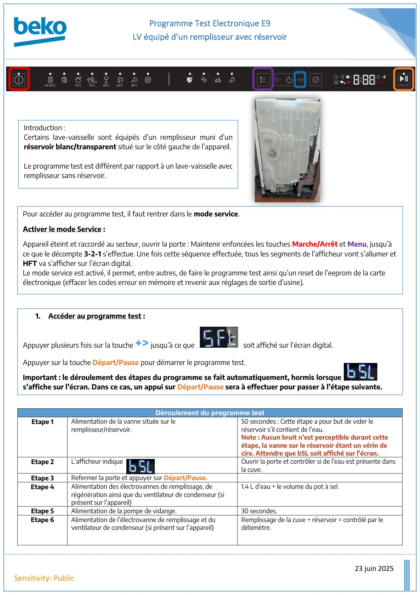
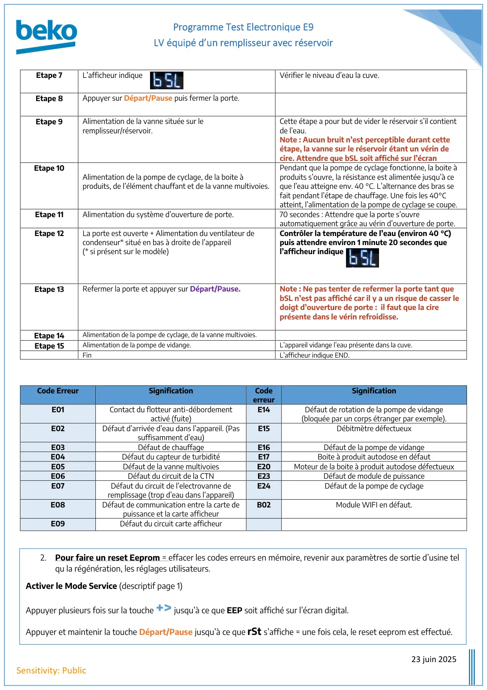

Prog Test lave vaisselle E9 Remplisseur Avec Réservoir

Programme Test Electronique E9LV équipé d’un remplisseur avec réservoir23 juin 2025Sensitivity: PublicDéroulement du programme testEtape 1Alimentation de la vanne située sur leremplisseur/réservoir.50 secondes : Cette étape a pour but de vider leréservoir s’il contient de l’eau.Note : Aucun bruit n’est perceptible durant cetteétape, la vanne sur le réservoir étant un vérin decire. Attendre que bSL soit affiché sur l’écran.Etape 2L’afficheur indiqueOuvrir la porte et contrôler si de l’eau est présente dansla cuve.Etape 3Refermer la porte et appuyer sur Départ/Pause.Etape 4Alimentation des électrovannes de remplissage, derégénération ainsi que du ventilateur de condenseur (siprésent sur l’appareil)1.4 L d’eau + le volume du pot à sel.Etape 5Alimentation de la pompe de vidange.30 secondes.Etape 6Alimentation de l’électrovanne de remplissage et duventilateur de condenseur (si présent sur l’appareil)Remplissage de la cuve + réservoir = contrôlé par ledébimètre.Pour accéder au programme test, il faut rentrer dans le mode service.Activer le mode Service :Appareil éteint et raccordé au secteur, ouvrir la porte : Maintenir enfoncées les touches Marche/Arrêt et Menu, jusqu’àce que le décompte 3-2-1 s’effectue. Une fois cette séquence effectuée, tous les segments de l’afficheur vont s’allumer etHFT va s’afficher sur l’écran digital.Le mode service est activé, il permet, entre autres, de faire le programme test ainsi qu’un reset de l’eeprom de la carteélectronique (effacer les codes erreur en mémoire et revenir aux réglages de sortie d’usine).1.Accéder au programme test :Appuyer plusieurs fois sur la touche +> jusqu’à ce quesoit affiché sur l’écran digital.Appuyer sur la touche Départ/Pause pour démarrer le programme test.Important : le déroulement des étapes du programme se fait automatiquement, hormis lorsques’affiche sur l’écran. Dans ce cas, un appui sur Départ/Pause sera à effectuer pour passer à l’étape suivante.Introduction :Certains lave-vaisselle sont équipés d’un remplisseur muni d’unréservoir blanc/transparent situé sur le côté gauche de l’appareil.Le programme test est différent par rapport à un lave-vaisselle avecremplisseur sans réservoir.
1 / 2
Programme Test Electronique E9LV équipé d’un remplisseur avec réservoir23 juin 2025Sensitivity: PublicEtape 7L’afficheur indiqueVérifier le niveau d’eau la cuve.Etape 8Appuyer sur Départ/Pause puis fermer la porte.Etape 9Alimentation de la vanne située sur leremplisseur/réservoir.Cette étape a pour but de vider le réservoir s’il contientde l’eau.Note : Aucun bruit n’est perceptible durant cetteétape, la vanne sur le réservoir étant un vérin decire. Attendre que bSL soit affiché sur l’écranEtape 10Alimentation de la pompe de cyclage, de la boite àproduits, de l’élément chauffant et de la vanne multivoies.Pendant que la pompe de cyclage fonctionne, la boite àproduits s’ouvre, la résistance est alimentée jusqu’à ceque l’eau atteigne env. 40 °C. L’alternance des bras sefait pendant l’étape de chauffage. Une fois les 40°Catteint, l’alimentation de la pompe de cyclage se coupe.Etape 11Alimentation du système d’ouverture de porte.70 secondes : Attendre que la porte s’ouvreautomatiquement grâce au vérin d’ouverture de porte.Etape 12La porte est ouverte + Alimentation du ventilateur decondenseur* situé en bas à droite de l’appareil(* si présent sur le modèle)Contrôler la température de l’eau (environ 40 °C)puis attendre environ 1 minute 20 secondes quel’afficheur indiqueEtape 13Refermer la porte et appuyer sur Départ/Pause.Note : Ne pas tenter de refermer la porte tant quebSL n’est pas affiché car il y a un risque de casser ledoigt d’ouverture de porte : il faut que la cireprésente dans le vérin refroidisse.Etape 14Alimentation de la pompe de cyclage, de la vanne multivoies.Etape 15Alimentation de la pompe de vidange.L’appareil vidange l’eau présente dans la cuve.FinL’afficheur indique END.Code ErreurSignificationCodeerreurSignificationE01Contact du flotteur anti-débordementactivé (fuite)E14Défaut de rotation de la pompe de vidange(bloquée par un corps étranger par exemple).E02Défaut d’arrivée d’eau dans l’appareil. (Passuffisamment d’eau)E15Débitmètre défectueuxE03Défaut de chauffageE16Défaut de la pompe de vidangeE04Défaut du capteur de turbiditéE17Boite à produit autodose en défautE05Défaut de la vanne multivoiesE20Moteur de la boite à produit autodose défectueuxE06Défaut du circuit de la CTNE23Défaut de module de puissanceE07Défaut du circuit de l’electrovanne deremplissage (trop d’eau dans l’appareil)E24Défaut de la pompe de cyclageE08Défaut de communication entre la carte depuissance et la carte afficheurB02Module WIFI en défaut.E09Défaut du circuit carte afficheur2.Pour faire un reset Eeprom = effacer les codes erreurs en mémoire, revenir aux paramètres de sortie d’usine telqu la régénération, les réglages utilisateurs.Activer le Mode Service (descriptif page 1)Appuyer plusieurs fois sur la touche +> jusqu’à ce que EEP soit affiché sur l’écran digital.Appuyer et maintenir la touche Départ/Pause jusqu’à ce que rSt s’affiche = une fois cela, le reset eeprom est effectué.
2 / 2